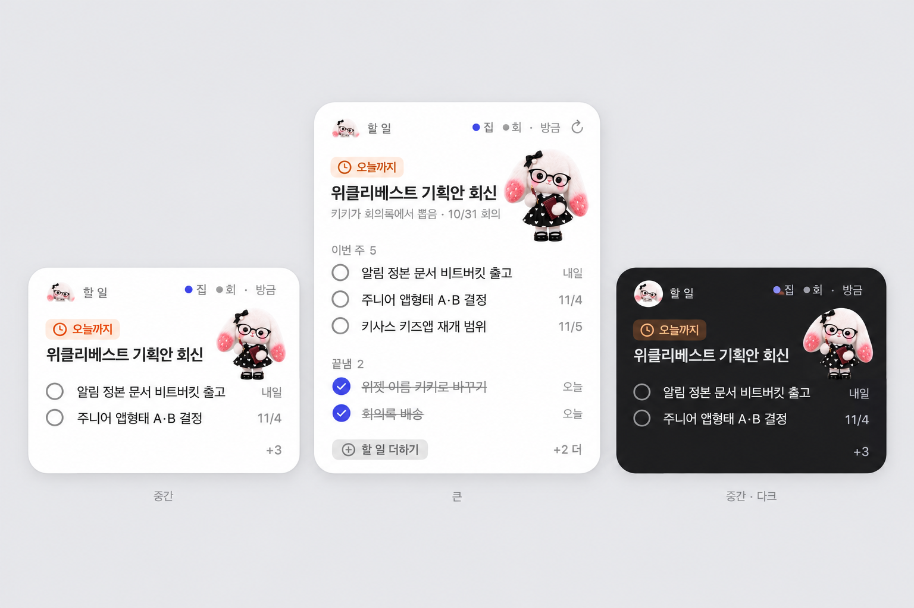
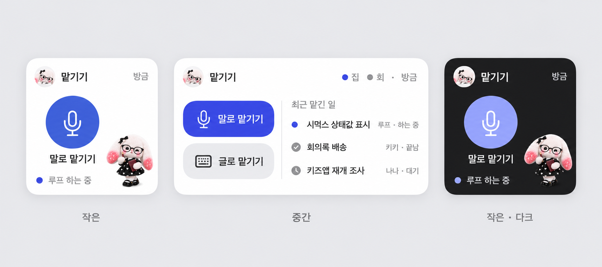
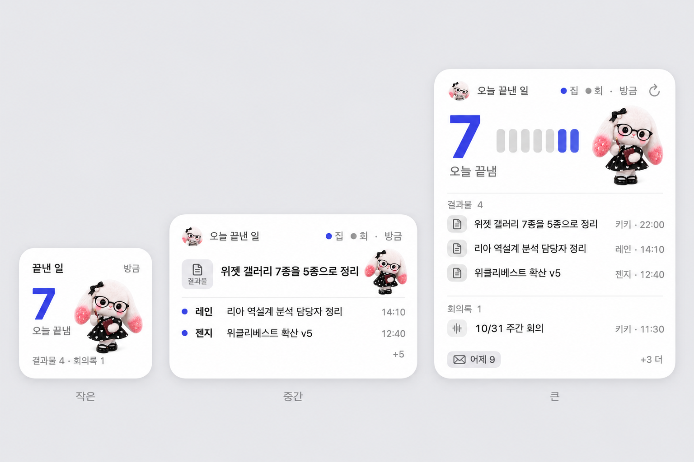

키키 위젯 추가 후보 3종
지금 위젯(오늘 한눈에·사용량·새 결과물)과 같은 디자인 규칙으로 만든 시안입니다 · 11월 1일
추천: A 할 일부터 넣고, 다음으로 B 맡기기. C는 매일 저녁 정리 습관이 생기면 넣는 걸 권합니다. 지금 위젯과 겹치지 않고, 하나씩 따로 빼도 되게 나눴습니다.
A 할 일 추천 1순위
내가 직접 해야 할 일을 마감 순으로 보여 주고, 위젯에서 바로 체크합니다.

| 왜 필요한가 | 「오늘 한눈에」는 크루가 나에게 묻는 일(확인·편지)이고, 내가 하기로 한 일은 지금 어느 위젯에도 없습니다. 회의록에서 뽑힌 할 일이 크루네 앱 안에만 있습니다. |
|---|
| 보여 주는 것 | 맨 위: 가장 급한 할 일 1개(마감 배지 「오늘까지」) · 아래: 이번 주 할 일 · 큰 크기만 「끝냄」 칸 |
|---|
| 누르면 | 동그라미 → 그 자리에서 끝냄 처리 · 글자 → 크루네 할 일의 그 항목 · 「할 일 더하기」 → 크루네 새 할 일 |
|---|
| 크기 | 중간 · 큰 (작은 크기는 한 줄만 보여 의미가 약해 뺌) |
|---|
| 넘칠 때·비었을 때 | 중간 2줄, 큰 3+2줄까지, 나머지는 「+N」 · 할 일이 없으면 「이번 주 할 일 없음」 |
|---|
| 담당 | 기획 키키 · 개발 나나 |
|---|
| 확인 필요 | 크루네 할 일 데이터를 위젯 파일로 내보내는 길이 아직 없습니다(개발 시 새로 만듦). |
|---|
B 맡기기 추천 2순위
한 번 눌러 크루에게 말로·글로 일을 맡기고, 맡긴 일이 어디까지 갔는지 봅니다.

| 왜 필요한가 | 지금은 일을 맡기려면 터미널이나 크루네를 먼저 열어야 합니다. 「귀」(말로 할 일 맡기기)가 이미 있어서 위젯은 들어가는 문만 달면 됩니다. |
|---|
| 보여 주는 것 | 작은: 마이크 버튼 하나 + 마지막으로 맡긴 일 상태 · 중간: 말로/글로 버튼 + 최근 맡긴 일 3개(하는 중·끝남·대기) |
|---|
| 누르면 | 「말로 맡기기」 → 귀 녹음 시작 · 「글로 맡기기」 → 크루네 입력창 · 맡긴 일 줄 → 그 대화 |
|---|
| 크기 | 작은 · 중간 |
|---|
| 넘칠 때·비었을 때 | 최근 3개까지 · 맡긴 일이 없으면 버튼만 |
|---|
| 담당 | 기획 키키 · 개발 나나 |
|---|
| 확인 필요 | 위젯 버튼으로 녹음을 바로 시작할 수 있는지(macOS 위젯은 앱을 열어서 시작해야 할 수 있음). |
|---|
C 오늘 끝낸 일 나중에
오늘 크루가 끝낸 일과 결과물을 모아, 하루 끝에 한 번 훑어봅니다.

| 왜 필요한가 | 끝난 일이 크루네 대화방 여러 곳에 흩어져 있어 「오늘 뭐가 끝났지」를 한 번에 보기 어렵습니다. |
|---|
| 보여 주는 것 | 작은: 오늘 끝낸 수 · 중간: 대표 결과 1개 + 2줄 · 큰: 결과물·회의록으로 나눈 목록 + 어제 수 |
|---|
| 누르면 | 줄 → 그 결과물·회의록 · 나머지 → 크루네 오늘 기록 |
|---|
| 크기 | 작은 · 중간 · 큰 |
|---|
| 겹침 주의 | 「새 결과물」과 내용이 일부 겹칩니다. 넣는다면 「새 결과물」을 빼고 이걸로 바꾸는 게 깔끔합니다. |
|---|
| 담당 | 기획 키키 · 개발 나나 · 기록 데이터 레인 |
|---|
검토했지만 뺀 것
- 오늘 일정 — 바탕화면에 애플 캘린더 위젯이 이미 있어서 겹칩니다.
- 크루 편지함 — 10월 24일에 「오늘 한눈에」 안으로 합쳤습니다.
- 두 Mac 상태 — 「오늘 한눈에」 머리줄(●집 ●회)에 이미 있습니다.